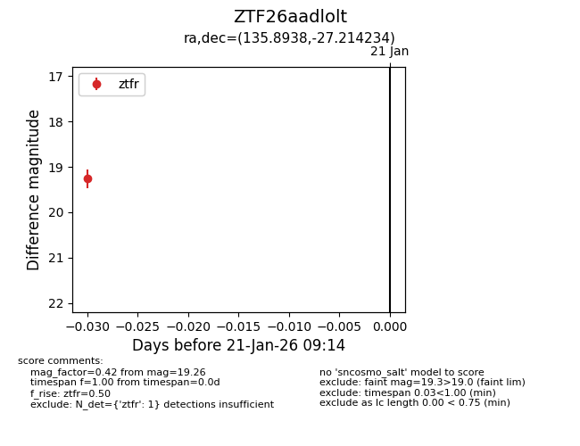
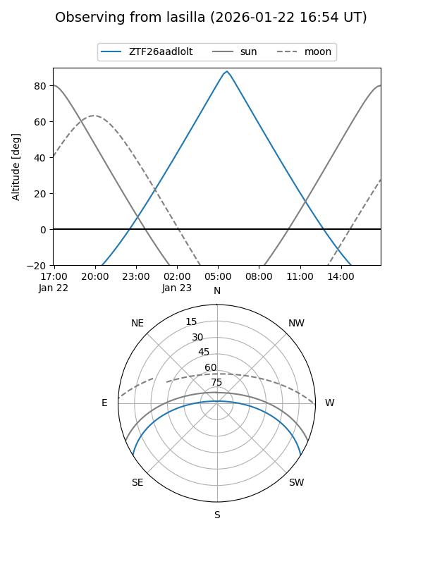
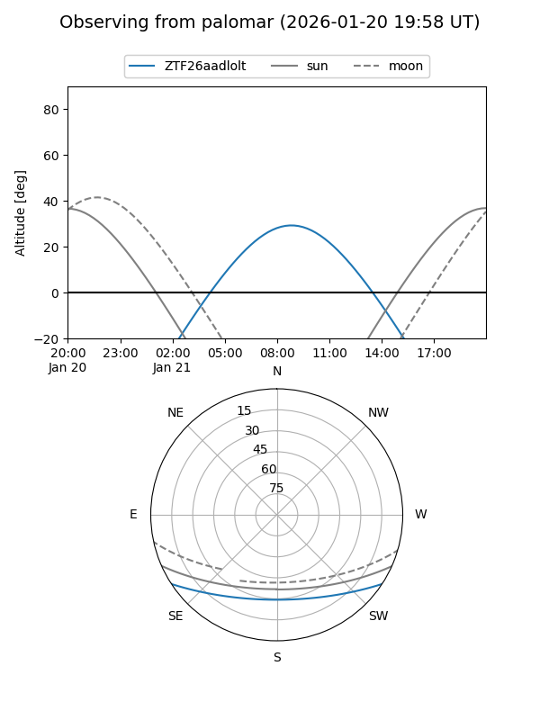

ZTF26aadlolt
Target ZTF26aadlolt at 2026-01-23 09:21
Aliases and brokers:
FINK: link
Lasair: link
ALeRCE: link
alt names
ZTF26aadlolt (ztf,fink_ztf)
Coordinates:
equatorial (ra, dec) = 135.8938,-27.21423
equatorial (HMS+DMS) = 09:03:34.50,-27:12:51.24
galactic (l, b) = (253.0437,+12.88130)
Flags:
Photometry:
last ztfr=19.26
1 ztfr detections
Lightcurve

Visibility


Additional plots